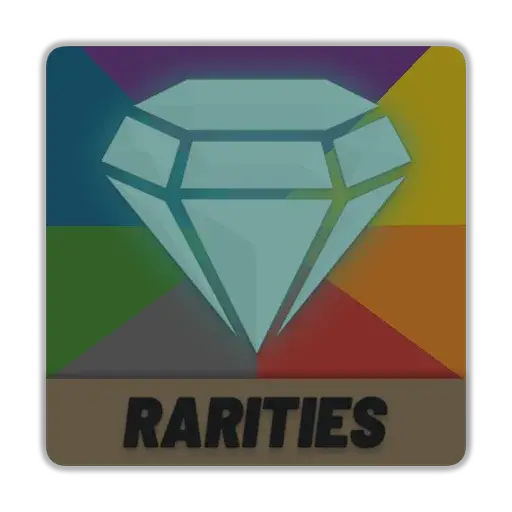

Mod
Rarities
- Downloads
- 732
- Favourites
- 0
DEPENDENCIES
-> Color Converter API
DISCLAIMER
By default, this mod has been configured in a special way for my own playthrough. If you wish to have a similar experience, consider downloading my other mods:
FEATURES
Background Colors
- Custom colors for any item in the game. By default, most of the items in the game have been configured by hand.
- Support for blanket and category coloring.
- Option to extend colors to the item names.
Superiority
- Adding attachments to an item will override the background color of the host item with the highest rarity attachment.
- Supports weapon attachments, plates, helmet accessories, and ammunition.

Version
1.0.0
SPT ~3.11.0
Fika: compatible
732 downloadsUnknown size
1.0 Release
I am aware that Color Converter API version 1.1.1 says that it is for SPT 4.0. The author has made it clear that it also works for 3.11
Dependencies
VirusTotal: report 1